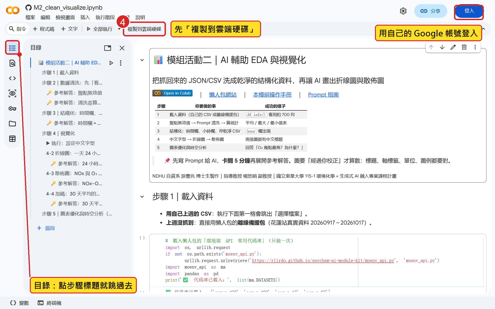
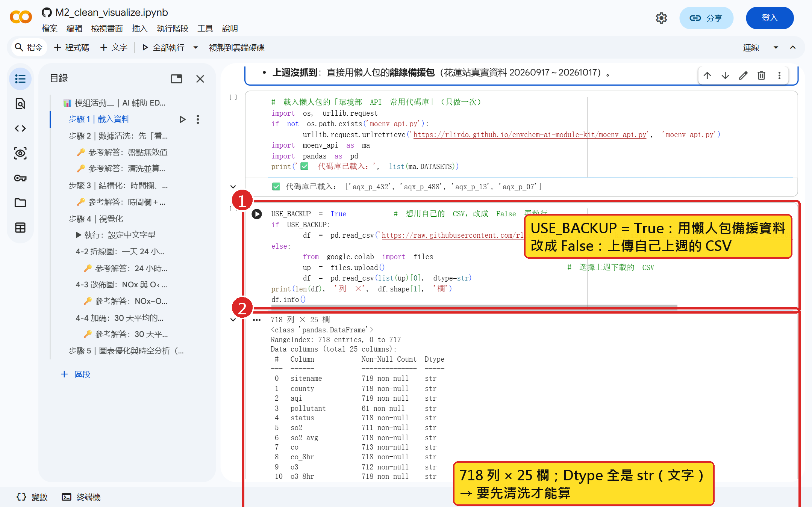
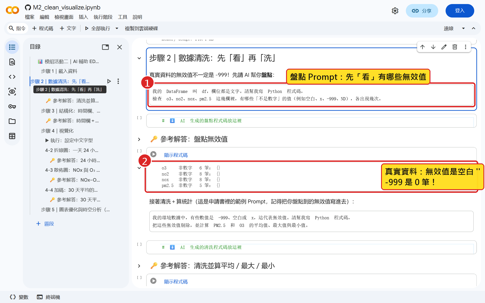
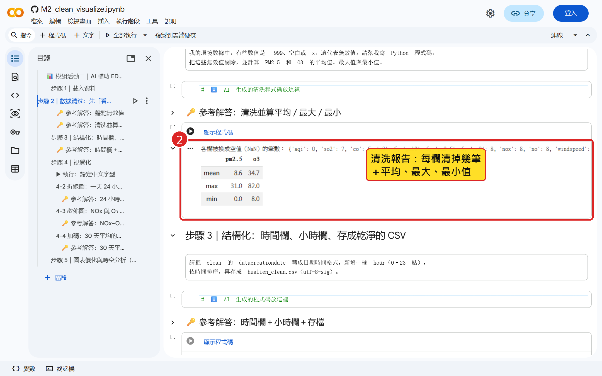
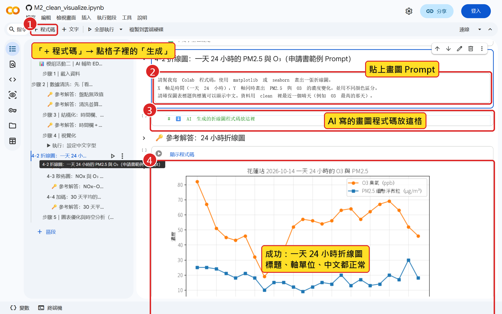
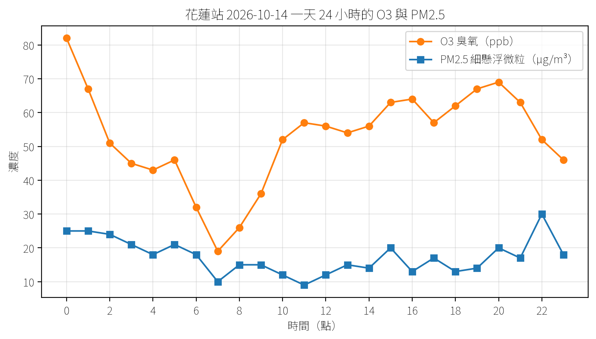
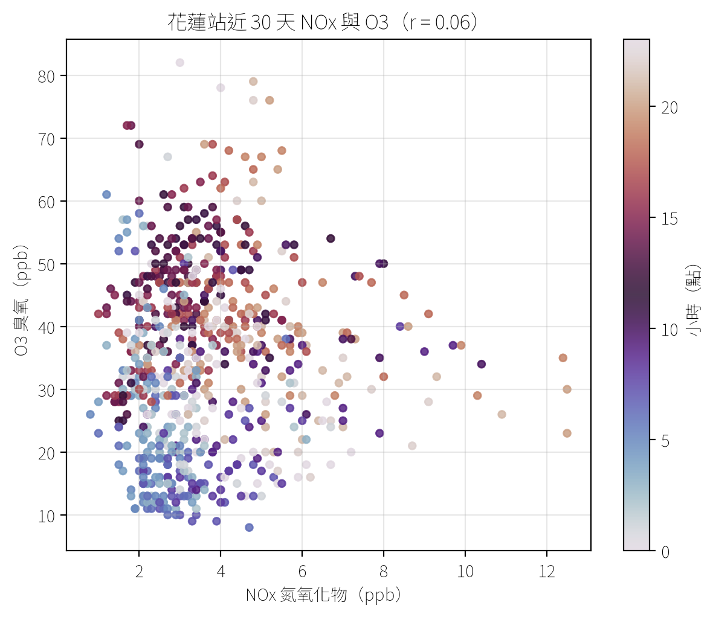
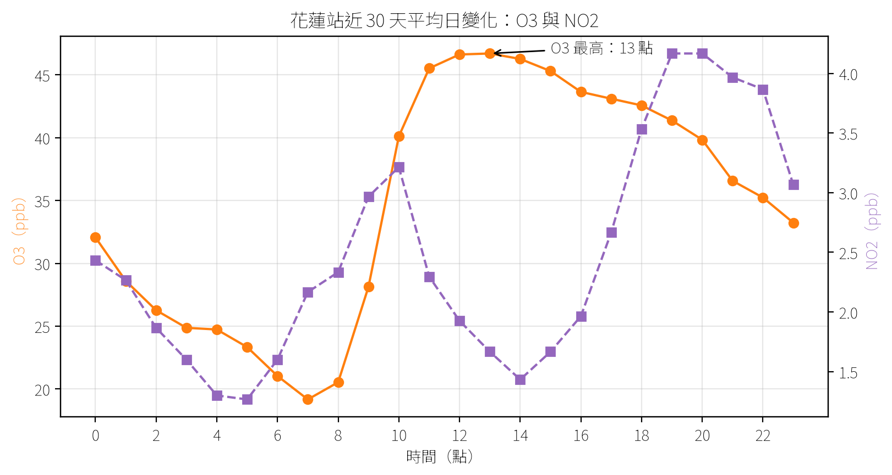
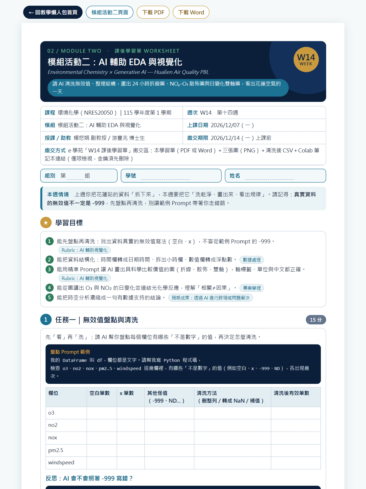

模組活動二｜2026/12/07（一）第 14 週 14:10–16:10
AI 輔助 EDA 與視覺化：數據清洗與圖表生成
把花蓮站 718 列「文字」洗成結構化資料，再讓 AI 畫出折線圖與 NOx–O3 散佈圖
🔑 API 金鑰＝帳號密碼：只放在 Colab「密鑰」，不要寫進程式碼、不要貼給 AI、截圖前先遮住。
任務目標
今天的任務：把花蓮站資料洗乾淨、畫成會說話的圖
情境任務延續：你是花蓮縣環保局「數據科技特派員」，AI 是你的數據清洗助手與繪圖工人
任務目標（今天 2 小時要做到）
- ① 載入花蓮站 CSV，看出「數字其實是文字」
- ② 先盤點無效值，再用 Prompt 清洗並算統計
- ③ 建立時間欄與小時欄，存成結構化 CSV
- ④ 讓 AI 畫出一天 24 小時折線圖
- ⑤ 畫 NOx–O3 散佈圖並算相關係數 r
- ⑥ 校正圖表，說出 O3 幾點最高、為什麼
AI 做什麼／你做什麼（人類主體性）
- AI 協作 寫清洗、轉換、統計與繪圖的程式碼
- 你負責 先盤點無效值，決定怎麼處理
- 你負責 校正圖表：標題、單位、中文、圖例
- 你負責 用課本的化學判讀圖表，不盲信 AI
- 期末產出 報告書「數據圖表集」：經你校正的圖
完整步驟流程圖
1
載入
14:16–14:27
- 開啟 M2 Colab 範本
- 載入自己的 CSV 或離線備援
- 718 列，數字其實是文字
2
清洗
14:27–14:48
- 先盤點：哪些不是數字
- 真實無效值是空白，不是 -999
- 清洗並算平均／最大／最小
3
結構化
14:48–14:57
- 時間欄轉成日期格式
- 新增 hour 欄（0–23 點）
- 存成 hualien_clean.csv
4
折線圖
14:57–15:23
- 設定中文字型
- 申請書繪圖 Prompt＋改良版
- O3 最高那天 24 小時
- （中間休息 10 分鐘）
5
散佈圖
15:23–15:33
- X＝NOx、Y＝O3
- 顏色代表小時
- 相關係數 r
- 相關 ≠ 因果
6
優化
15:33–15:59
- 30 天平均日變化雙軸圖
- O3 光化學與 NO 滴定
- 小組時空分析
上方灰色列會隨捲動標示你現在在哪一步；點任一步可直接跳過去。
上課前先知道
今天怎麼評量？評量規準與預期成果
申請書・學習成果與評量方式（三向度 Rubric 之二：AI 輔助數據視覺化）＋預期成果
| 評量項目 | 優秀（8–10 分） | 通過（6–7 分） | 需加強（0–5 分） |
|---|---|---|---|
| AI 輔助數據視覺化 | 圖表清晰，X/Y 軸標籤與中文正確；能用精準 Prompt 產出具科學比較價值的圖（如雙軸圖、相關性圖） | 圖表大致完整，但漏掉中文顯示，或圖表類型選用不夠精準（如用折線圖畫非連續資料） | 無法產出具備可讀性的數據圖表 |
| 今日證據 | ① 清洗報告 ② 24 小時折線圖 ③ NOx–O3 散佈圖＋r ④ 日變化雙軸圖 | 清洗與繪圖 Prompt 紀錄（原版 → 改良版） | hualien_clean.csv＋三張經你校正的圖 |
| 對應預期成果 | 質化：分辨 AI 工具價值與人類主體性，反思數據偏誤 | 質化：不再恐懼大數據與程式碼 | 量化：PBL 數據作品的「數據圖表集」 |
上週回顧：我們手上這份 CSV 長什麼樣？
模組活動一成果：環境部 aqx_p_488 花蓮站逐時資料（2026/9/17 18:00 → 10/17 17:00）
上週做到了
- 用 Prompt 讓 Gemini 寫抓資料的程式
- 金鑰存在 Colab「密鑰」
- 抓到花蓮站近 30 天逐時資料
- 存成 CSV 下載到電腦
這份資料的「不完美」
- 應有 720 小時，實得 718 列（缺 2 小時）
- 數值欄全部是「文字」
- 各污染物欄有 5–8 筆空白
- 沒有任何一筆 -999
今天要回答的問題
- 花蓮的 O3 幾點最高？幾點最低？
- NO2 的高峰在幾點？
- NOx 和 O3 有關係嗎？
- 圖要怎麼畫才不會誤導人？
AI 課程倫理：資料清洗的誠信
清洗不是「把不好看的數字變好看」：可追溯、可重現、不竄改
不可竄改原始值
- 原始 CSV 留一份，不覆蓋
- 清洗結果另存 hualien_clean.csv
- 無效值改成空值（NaN），不要填 0
- 不可因為「看起來太高」就刪掉
記錄每一個清洗步驟
- 哪些值算無效？各欄清掉幾筆？
- 用了哪段 Prompt、哪一版程式？
- 缺了哪幾個小時？
- 寫進學習單：別人照做能得到同樣結果
數據偏誤
- 缺值不一定隨機：這份資料的空白全在白天 10–16 時
- 一個測站不能代表整個花蓮
- 平均值會掩蓋高峰事件
- 沒有測站的地方誰來看？（環境正義）
1載入花蓮 CSV
步驟 1-1｜從懶人包網站開啟 M2 Colab 範本

跟著做
- 1掃 QR code 進懶人包網站
- 2點「模組活動二」操作手冊
- 3按「Open in Colab」開啟範本
- 4按「複製到雲端硬碟」存成自己的
- →今天不用金鑰，直接用 CSV
💡 範本每一步都有提示詞和收起來的「參考解答」：先寫 Prompt 給 AI，卡關 5 分鐘以上再展開。
步驟 1-2｜載入 CSV：718 列，但「數字」其實是文字

跟著做
- 1執行「載入代碼庫」那一格
- 2改 USE_BACKUP 選資料來源
- 3df.info()：718 列 × 25 欄
- 4Dtype 是 object（或 str）＝文字
- →o3 只有 712 筆非空值：少 6 筆
💡 讀檔時空白格會自動變成 NaN，所以 Non-Null 筆數會少於 718：這就是無效值的第一個線索。
2盤點與清除無效值
步驟 2-1｜先「看」再「洗」：-999 的陷阱
申請書範例假設無效值是 -999；花蓮站真實資料一筆 -999 都沒有
如果照範例寫
- Prompt：「有些數值是 -999」
- AI 寫出找 -999 的程式
- 找到 0 筆，以為資料很乾淨
- 真正的空白還在：平均算錯或報錯
真實的無效值
- aqx_p_488：空白（每欄 5–8 筆）
- aqx_p_13 寬表：用「x」表示
- 其他資料集：ND、NA、—、#
- 同一個平臺，不同資料集寫法不同
所以要先盤點
- 先請 AI 列出「不是數字」的值
- 看清楚有哪幾種、各幾筆
- 再把盤點結果寫進清洗 Prompt
- AI 只會照你說的做
步驟 2-2｜盤點 Prompt：哪些值「不是數字」？
我的 DataFrame 叫 df，欄位都是文字。
請幫我寫 Python 程式碼，檢查 o3、no2、nox、pm2.5 這幾欄裡，有哪些「不是數字」的值（例如空白、x、-999、ND），各出現幾次。
- 貼哪裡 「AI 生成的盤點程式碼放這裡」那一格 →「生成」
- 看什麼 每一欄有幾筆不是數字、長什麼樣
- 加碼 把 so2、pm10、co 也加進去
- 卡關 展開「參考解答：盤點無效值」
- 記下來 盤點結果抄到學習單任務一
步驟 2-3｜盤點結果：無效值是「空白」，-999 是 0 筆

跟著做
- 1o3：6 筆；pm2.5：5 筆
- 2no2、nox、no：各 8 筆
- 3so2：7 筆；pm10、co：各 5 筆
- 4-999、x、ND：都是 0 筆
- →另有整列缺：10/13 的 10 時、16 時
💡 空白在讀檔時已變成 NaN，所以盤點結果可能只有筆數、看不到值是什麼：這是正常的。
步驟 2-4｜清洗 Prompt：申請書原版 vs. 改良版
【申請書原版】
我的環境數據中，有些數值是 -999，這代表無效值。請幫我寫 Python 程式碼，把這些無效值剔除，並計算 PM2.5 和 O3 的平均值、最大值與最小值。
【改良版：寫進你的盤點結果】
我的 DataFrame 叫 df，欄位都是文字。這份花蓮站資料的無效值是空白（讀進來已變成 NaN），aqx_p_13 資料集則用「x」。請把 aqi、so2、co、o3、pm10、pm2.5、no2、nox、no、windspeed、winddirec 轉成數字，無效值一律變成 NaN（不要填 0、不要刪整列），印出每欄清掉幾筆，結果存成新表 clean（不要改動 df），再計算 PM2.5 和 O3 的平均值、最大值與最小值。
- 先試原版 看 AI 有沒有處理到空白
- 再用改良版 把盤點結果與規則寫進去
- 比一比 清掉的筆數和盤點一樣嗎？
- 卡關 展開「參考解答：清洗並算平均／最大／最小」
- 記下來 兩版 Prompt 都抄到學習單任務二
步驟 2-5｜成功的樣子：清洗報告＋統計表
num_cols = ['aqi', 'so2', 'co', 'o3', 'pm10',
'pm2.5', 'no2', 'nox', 'no',
'windspeed', 'winddirec']
clean, removed = ma.clean_numeric(df, num_cols)
print('各欄被換成空值的筆數：', removed)
clean[['pm2.5', 'o3']].agg(['mean', 'max', 'min']).round(1)
# 輸出：
# pm2.5 o3
# mean 8.6 34.7
# max 31.0 82.0
# min 0.0 8.0
- 清掉的筆數＝盤點筆數（o3 6、no2 8…）
- PM2.5：平均 8.6、最高 31、最低 0 μg/m³
- O3：平均 34.7、最高 82、最低 8 ppb
步驟 2-6｜清洗常見錯誤對照表
| 錯誤或現象 | 通常的原因 | 怎麼修 |
|---|---|---|
| TypeError（不能對文字算平均） | 欄位還是文字 | 先 pd.to_numeric(..., errors='coerce') |
| 找到 0 筆無效值 | 照範例找 -999，真實是空白 | 先盤點，把真的寫法寫進 Prompt |
| 列數從 718 變 703 | 用 dropna() 刪了整列 | 只把該格設成 NaN，不刪整列 |
| 平均值偏低（O3 34.7 → 34.4） | 把無效值填成 0 | 無效值留 NaN，不要填 0 |
| 原始 df 也被改掉 | 直接在 df 上覆寫 | 清洗結果另存成 clean |
3時間欄位與結構化
步驟 3-1｜什麼是「結構化資料」？
一列一個觀測（一個小時）、一欄一個變數、每格一個值，而且型態正確
結構化的三個條件
- 一列＝一個小時的觀測
- 一欄＝一個變數（o3、no2…）
- 每一格一個值，型態正確：數字是數字、時間是時間
我們要補的兩欄
- datacreationdate：文字 → 日期時間
- hour：從時間取出 0–23 點
- 依時間排序，才能畫折線圖
- 存成 hualien_clean.csv
寬表 vs. 長表
- aqx_p_13：一列一天一項目，24 個小時欄
- 要先轉成長表才能畫圖
- 代碼庫 p13_to_long() 一行轉好
- 今天的 aqx_p_488 本來就是長表
步驟 3-2｜結構化 Prompt：時間欄＋小時欄＋存檔
請把 clean 的 datacreationdate 轉成日期時間格式，新增一欄 hour（0–23 點），依時間排序，再存成 hualien_clean.csv（utf-8-sig）。
【加碼】
請再檢查從最早到最晚應該有幾個小時、實際有幾列，並列出缺少的時間點。
- 成功 出現 hour 欄，第一列是 9/17 18 時
- 存檔 左側「檔案」看到 hualien_clean.csv
- 加碼答案 應有 720 小時，缺 2 小時
- 一定要 下載到電腦，模組三還要用
- 卡關 展開「參考解答：時間欄＋小時欄＋存檔」
步驟 3-3｜成功的樣子：結構化的花蓮站資料表
clean['datacreationdate'] = pd.to_datetime(
clean['datacreationdate'])
clean = clean.sort_values('datacreationdate')
clean = clean.reset_index(drop=True)
clean['hour'] = clean['datacreationdate'].dt.hour
clean.to_csv('hualien_clean.csv', index=False,
encoding='utf-8-sig')
# 輸出（前 3 列）：
# datacreationdate hour pm2.5 o3 no2 nox
# 2026-09-17 18:00:00 18 8.0 47.0 3.0 4.2
# 2026-09-17 19:00:00 19 12.0 46.0 4.0 5.3
# 2026-09-17 20:00:00 20 13.0 39.0 6.0 7.0- 時間欄 型態變成 datetime64
- hour 欄 0–23 的整數，可以分組
- 數值欄 float64，能算平均
- 起訖 9/17 18 時 → 10/17 17 時
- 存檔 hualien_clean.csv（utf-8-sig）
- 倫理 原始 CSV 不動，乾淨版另存
424 小時折線圖
步驟 4-1｜先讓圖表能顯示中文（只做一次）
ma.use_chinese_font() # 下載思源黑體並設定給 matplotlib
print('中文字型已設定')
# 化學式請寫 O3、NO2、PM2.5
ax.set_title('花蓮站 O3 與 NO2') # 正常顯示
ax.set_title('花蓮站 O₃ 與 NO₂') # 下標會變成方塊- 為什麼 matplotlib 預設字型沒有中文，會變成方塊
- 怎麼做 執行範本「設定中文字型」那一格
- 要多久 第一次約 10 秒（下載字型）
- 下標 ₃、₂ 也會變方塊：程式裡寫 O3、NO2
- 重新連線 Colab 斷線重開後要再執行一次
步驟 4-2｜繪圖 Prompt：申請書原版＋改良版
【申請書原版】
請幫我寫 Colab 程式碼，使用 matplotlib 或 seaborn 畫出一張折線圖。X 軸是時間（一天 24 小時），Y 軸同時畫出 PM2.5 與 O3 的濃度變化，並用不同顏色區分。請確保圖表標題與標籤可以顯示中文。
【改良版：補上資料範圍、單位、字型、檔名】
資料用 clean 裡 O3 最高的那一天（24 小時）。請處理 Colab 中文字型（先執行 ma.use_chinese_font()，避免中文變成方塊），化學式寫 O3、PM2.5，不用下標字元。O3 單位是 ppb、PM2.5 是 μg/m³，請把單位寫進圖例；標題寫出測站與日期，存成 fig1_一天24小時.png。畫圖前先印出這一天的 24 筆資料讓我確認，並說明每段程式在做什麼。
- 原版少了什麼 哪一天？什麼單位？存成什麼檔？
- 改良版補上 資料範圍、單位、字型、檔名
- 想一想 ppb 和 μg/m³ 能畫在同一個 Y 軸嗎？
- 卡關 展開「參考解答：24 小時折線圖」
步驟 4-3｜用 Colab 的 Gemini「生成」畫出折線圖

跟著做
- 1在「AI 生成的折線圖」格點「生成」
- 2貼上改良版 Prompt，送出
- 3讀註解：確認用的是 clean
- 4接受後按 ▶ 執行
- →中文變方塊：回到步驟 4-1
💡 每個人的圖可能不一樣，這很正常；請檢查：哪一天、單位、中文、圖例。畫完先休息，回來一起看圖。
步驟 4-4｜成功的樣子：2026/10/14 一天 24 小時

讀圖：你看到什麼？
- 最高 O3 82 ppb 出現在 0 時（半夜）
- 最低 O3 19 ppb，在 7 時
- 白天 10 時後回升到 50–69 ppb
- PM2.5 當天平均約 17 μg/m³，月平均的 2 倍
- 問題 半夜最高，符合「日照生成 O3」嗎？
- 提醒 單日是個案，規律要看 30 天平均
步驟 4-5｜圖表校正檢核＋常見錯誤
| 檢核項目 | 常見錯誤 | 怎麼請 AI 修 |
|---|---|---|
| 標題：測站、期間、畫什麼 | 只寫「折線圖」 | 「標題改成：花蓮站 2026-10-14 O3 與 PM2.5」 |
| 軸標籤有單位 | Y 軸只寫「濃度」 | 「ppb 和 μg/m³ 分開，改成雙 Y 軸」 |
| 中文正常顯示 | 中文、下標變成方塊 | 先執行 use_chinese_font()，化學式寫 O3 |
| X 軸看得懂 | 完整日期擠成一團 | 「X 軸改用 hour，每 2 小時一格」 |
| 圖表類型選對 | 用折線連起不連續的點 | 兩變數關係改用散佈圖 |
5NOx–O3 散佈圖與相關
步驟 5-1｜散佈圖 Prompt：NOx 與 O3 有關係嗎？
請用 clean 畫一張散佈圖：X 軸是 NOx（ppb），Y 軸是 O3（ppb），點的顏色代表 hour（0–23 點），加上色條、中文標題，並計算兩者的相關係數 r 顯示在標題上。
- 為什麼散佈圖 看兩個變數是否「一起變」，點不連線
- 顏色＝小時 分得出清晨、中午、傍晚的點
- r 的意義 −1～1：越接近 0，線性關係越弱
- 先猜 r 會是正的、負的，還是接近 0？
- 卡關 展開「參考解答：NOx–O3 散佈圖」
步驟 5-2｜成功的樣子：r = 0.06，幾乎沒有相關

讀圖：你看到什麼？
- 整體 r = 0.06：點散成一團，幾乎無相關
- NOx 很低 平均 3.6 ppb，最高約 12.5 ppb
- 藍色（清晨） O3 低、NOx 也低
- 深色（中午） O3 高、NOx 低
- 橘棕（傍晚） NOx 偏高、O3 中等
- 結論 O3 高低跟「幾點」比較有關
步驟 5-3｜r 很小，代表 NOx 和 O3「沒關係」嗎？
相關係數只量「線性」關係；相關不等於因果
相關 ≠ 因果
- r 大也不代表 A 造成 B
- 兩者可能都被第三個因素控制
- 日照同時控制 NO2 光解與 O3 生成
- 邊界層高度、風向也會同時影響兩者
r 小 ≠ 沒有化學關係
- 花蓮 NOx 很低，NO 滴定 O3 不明顯
- O3 主要受日照與區域背景控制
- 白天生成、夜晚消耗混在一起
- 彎曲的（非線性）關係 r 抓不到
下一步怎麼做
- 分時段看：只畫白天或夜晚再算 r
- 改看平均日變化（步驟 6）
- 與都市交通站比較
- 寫下觀察，模組三請 AI 推論再查證
6圖表優化與時空分析
步驟 6-1｜優化：30 天平均日變化雙 Y 軸圖
請把 clean 依 hour 分組，算出每個小時 O3、NO2 的平均值，畫成雙 Y 軸折線圖（左軸 O3、右軸 NO2），並標出 O3 最高的時間點。
【校正要求】
標題寫「花蓮站近 30 天平均日變化：O3 與 NO2」，兩個 Y 軸都要標單位（ppb），存成 fig3_日變化雙軸.png，最後印出每小時平均值表。
- 為什麼雙軸 O3 約 19–47、NO2 約 1–4 ppb，差十倍
- 為什麼平均 30 天平均才看得出「規律」
- 折線圖用對了 小時是連續的，可以連線
- 卡關 展開「參考解答：30 天平均日變化雙軸圖」
步驟 6-2｜成功的樣子：O3 13 時最高，NO2 19 時最高

讀圖：30 天平均
- O3 最低 7 時，平均 19.2 ppb
- O3 最高 13 時，平均 46.7 ppb
- NO2 小峰 9–10 時，約 3.2 ppb
- NO2 低谷 14 時前後，約 1.4 ppb
- NO2 最高 19 時，4.2 ppb（NOx 5.1 ppb）
- 對照 O3 上升時，NO2 正在下降
步驟 6-3｜化學解讀：O3 的光化學生成與 NO 滴定
課本大氣化學（Manahan／Baird，第 8–12 章）：對照你的日變化圖
白天：光化學生成
- NO2 + hν（λ < 420 nm）→ NO + O
- O + O2 + M → O3 + M
- VOC 產生的 HO2、RO2 把 NO 轉回 NO2，O3 才會淨累積
- 對照：10–13 時 O3 升、NO2 降
夜晚：NO 滴定與沉降
- NO + O3 → NO2 + O2
- 沒有日照，O3 不再生成
- 邊界層變淺，O3 被地表沉降消耗
- 對照：19 時 NO2 最高、7 時 O3 最低
花蓮的特色
- 一般測站，NOx 很低（平均 3.6 ppb）
- 滴定效應弱，夜間 O3 不會降到零
- O3 也受區域傳輸影響（10/14 半夜 82 ppb）
- 東北季風、地形：模組三再查證
動手做｜小組時空分析：用你的圖回答四個問題
小組討論（寫進學習單任務四）
- ① O3 最高、最低各在幾點？為什麼？
- ② NO2 高峰在幾點？跟上下班有關嗎？
- ③ r = 0.06 代表什麼？還有哪些因素？
- ④ 10/14 半夜 O3 82 ppb，可能原因？
圖表優化（每人至少改一處）
- 把 24 小時折線圖改成雙 Y 軸
- 散佈圖只畫白天（10–16 時）再算 r
- 加畫 NOx 或 PM2.5 的日變化
- 用 Prompt 修改，記下修改前後
⏱ 小組 16 分鐘
收尾與檢核
今日成果檢核＋預期成果對照
對照申請書（六）預期成果：今天達成了哪些？
| 預期成果 | 今天的證據 | 自我檢核 |
|---|---|---|
| 質化①：分辨 AI「工具價值」與「人類主體性」，反思數據偏誤 | 先盤點再清洗；無效值留空值、原始檔不動 | □ 我記錄了清掉幾筆、缺哪幾小時 |
| 質化②：不再恐懼大數據與程式碼，建立透過 AI 跨領域解題的自信 | 718 列文字表 → 結構化資料 → 3 張圖 | □ 我用 Prompt 畫出 3 張圖 |
| 量化①：每組一件結合花蓮在地 API 的 PBL 數據作品 | hualien_clean.csv＋經校正的圖＝報告書「數據圖表集」 | □ 圖有標題、單位、中文、圖例 |
| 量化②：建置環化 API 數據協作成果網頁／雲端資料夾 | 優秀圖表收進懶人包網站「成果展示」 | □ 圖檔已下載並上傳繳交區 |
| 教學擴散：模組教案開源、可複製可轉移 | M2 範本、代碼庫 clean_numeric、Prompt 指南全部公開 | □ 我會用懶人包自己再做一次 |
課後學習單（第 14 週）：模組活動二

繳交方式與重點
- 任務一 無效值盤點與清洗（含 -999 範例反思）
- 任務二 結構化：時間欄、小時欄、資料型態
- 任務三 三張經你校正的圖（折線、散佈、日變化）
- 任務四 讀圖：O3 與 NO2 的日變化
- 任務五 散佈圖 r 值與「相關≠因果」
- 任務六 時空分析：一句話結論
- 最後 Prompt 紀錄表＋AI 使用誠實聲明
- 繳交 學習單＋圖檔＋hualien_clean.csv，下週一上課前上傳 e 學苑